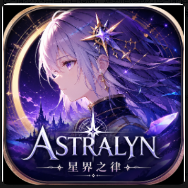

STAR-LAW / MAIN HUB
星界之律
界痕、回覆台與旅者的記錄，從這裡開始。
STAR-LAW ID / SECURE ENTRY
要進入星界之律大廳嗎？
玩家進度、抽卡紀錄、保底與角色收集都會綁定在你的帳號。請先選擇登入方式。
STAR-LAW / HOME TERMINAL
星界之律大廳
在回覆台之間整理線索，推進文件中的旅程，召集角色並培養已取得的夥伴。
MAIN MENU
選擇要前往的區域
CONTINUE
從第一章開始你的旅程目前已開放文件 1.0–2.5 的遊戲入口。
在這裡查看版本內容、額外獎勵與重要系統變更。公告只會說明規則，不會取代你的玩家存檔。
4★成長倍率與經驗成本較高；3★培養成本較低。重複抽到角色時命座會立即自動增加，培養頁不再放置多餘的命座按鈕。
FORMATION
出戰編隊
FORMATION
Boss 出戰編隊
FORMATION
派遣隊伍
隨機選擇航線，通過事件、商店、休整與戰鬥；不同選擇會帶你走向一般、隱藏或特殊結局。
HOW TO PLAY星海迷航遊玩指引選航線 → 編隊 → 做選擇 → 打敗終端
點選左側航線查看特色；沒有選擇時，開始航程會隨機抽一條。
點擊下方角色卡加入隊伍。每個戰鬥節點至少需要 1 名已取得角色，卡片會顯示個人戰力。
事件、休整與商店要選一個處理方式；戰鬥節點先查看敵人，再按下方按鈕進入自走棋戰鬥。
戰鬥勝利才會前進；失敗會結束本次航程，但角色與帳號資源不會被扣除，可以重新開航。
星海碎片只在本次航程使用，可於商店換臨時增益；回聲與增益會影響本趟路線與結局，完成或失敗後重置。
一般：完成終端。隱藏：開啟檔案門，或在無名檔案線累積 2 道回聲。特殊：三星與四星混編，並在三重回音室選「調和兩種頻率」。
一般、隱藏、特殊結局的獎勵每個版本各領一次；已領取的結局仍可再次探索，但不會重複發放同一份結局獎勵。
FORMATION
迷航出戰隊伍
寵物有自己的食物、玩具、星伴代幣、等級、心情與親密度。你可以只自己收藏，也可以公開作品讓其他玩家參觀與評分。
CUSTOMIZATION
外觀與特效
關閉公開後，其他玩家將看不到你的展示，也不會影響你自己的寵物進度。
ARCHIVE
角色收集
PUBLIC LOG